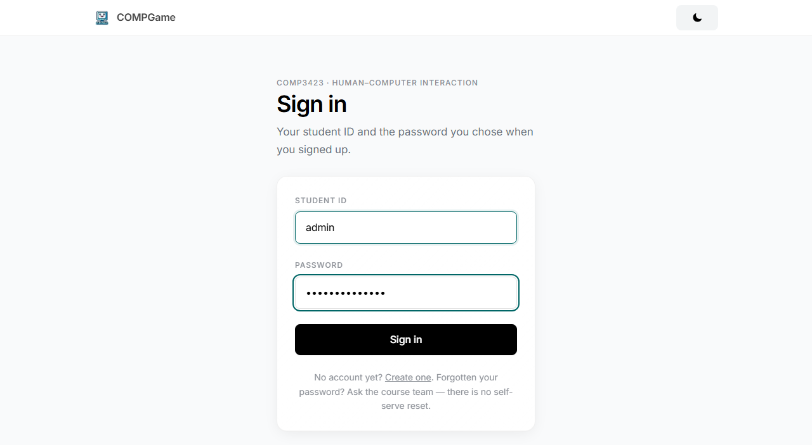
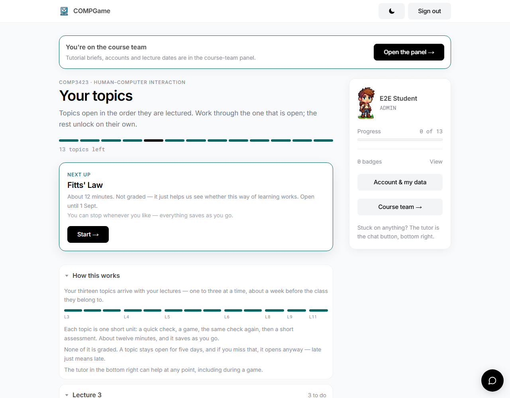
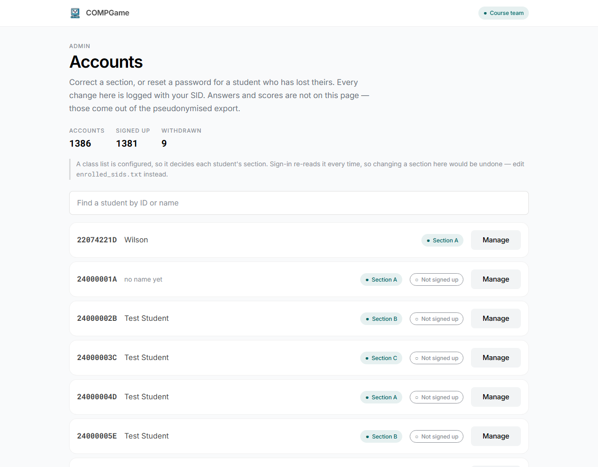
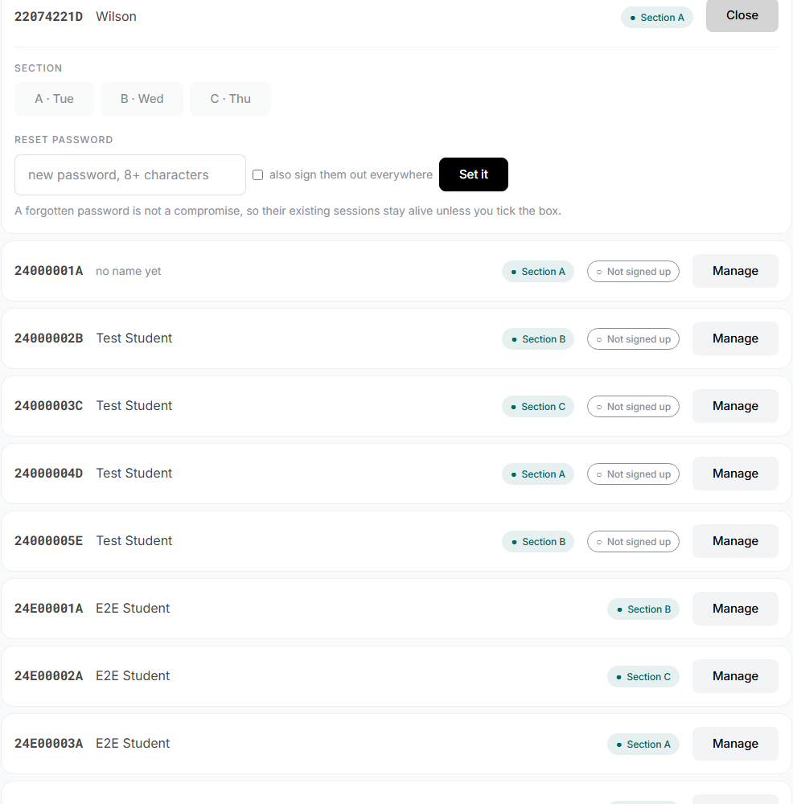
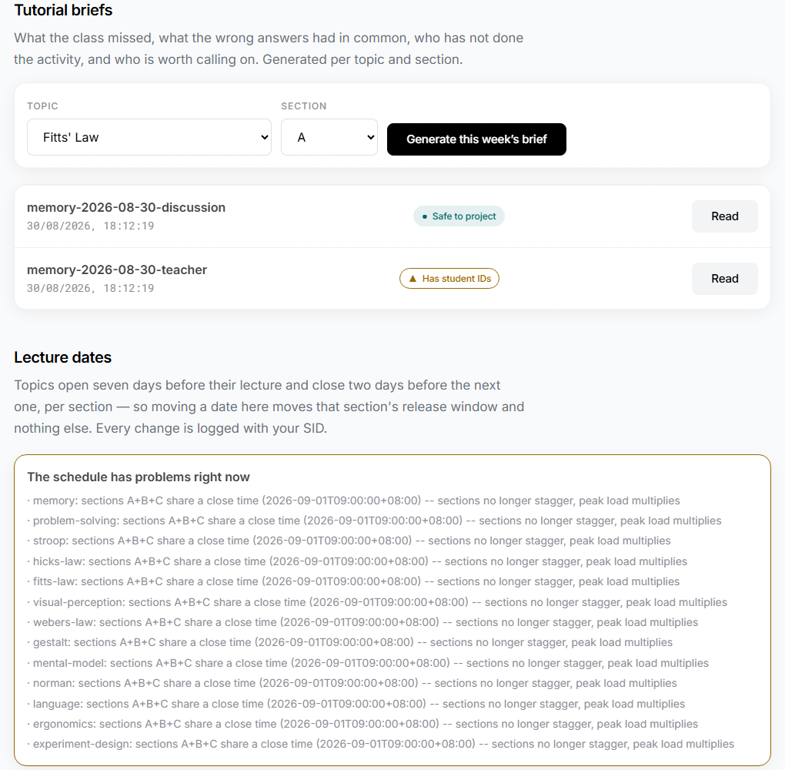
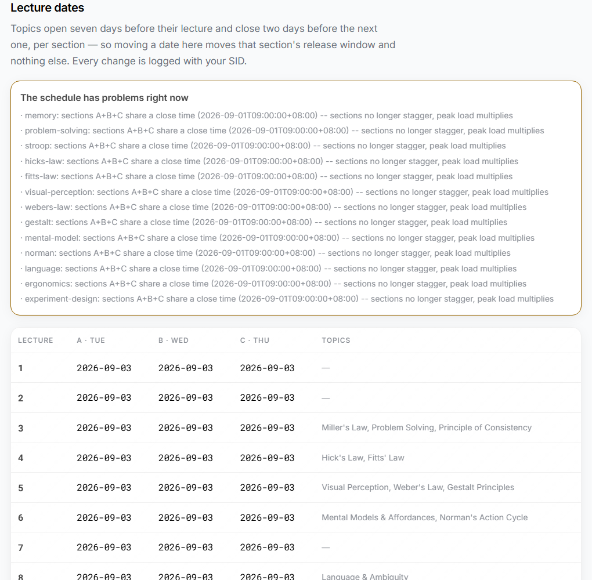
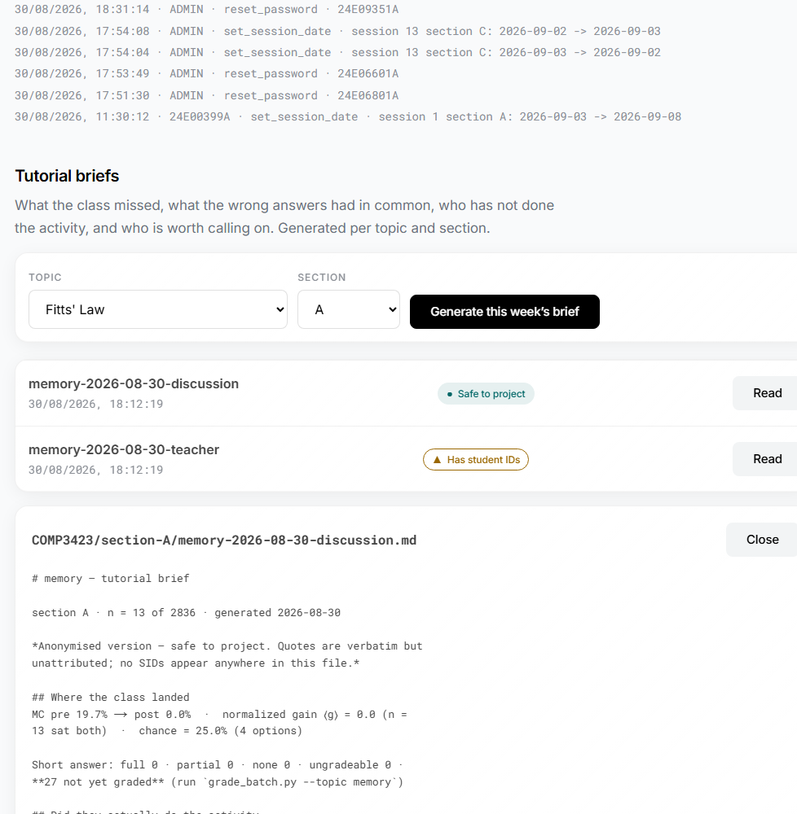

Reaching the panel
There is no separate teacher login. You sign in with an ordinary account — your student/staff ID and a password — and the panel unlocks only because your ID is on the staff list the server keeps. That means a course-team member goes through the same door as everyone else.

Once you are signed in, your home screen gains a link students never see: a "You're on the course team" banner and a Course team → button. Either one opens the panel. If you would rather type it, the address is /admin.

Accounts
The Accounts view is your roster at a glance. Across the top you see how many accounts exist, how many have signed up, and how many have withdrawn. Below is a searchable list — find anyone by ID or name — with each student's section and whether they have signed up yet.

Manage opens the two things a teacher occasionally needs to do for one student:
- Correct a section — move a student between A, B and C if they were placed wrongly.
- Reset a password — for a student who has lost theirs. You set a new one; you can never see the old one.

Tutorial briefs — what to teach today
This is the part built for the thirty minutes before a tutorial. For any lectured topic you can generate a short brief that reads the class's own answers and tells you where they actually landed — so you spend the hour on what they got wrong, not what you guessed they might.
Each brief comes in two versions, and the panel labels them clearly:
| Version | Label | Use it for |
|---|---|---|
| Anonymised | Safe to project | Showing on screen. Quotes are verbatim but unattributed; no student IDs anywhere in the file. |
| Full | Has student IDs | Your eyes only. Names the students behind the numbers so you can follow up. |

Press Read to open a brief in place. It walks through where the class landed (the before-and-after check scores and the learning gain), whether they actually did the activity, and a short "who to spend the hour on" read of the short-answer responses.

Lecture dates
Topics open about a week before their lecture and close a couple of days before the next one, per section. If a class moves, you can move the matching lecture date here and the release window follows it — you do not edit any files.

The audit trail
Every change made in the panel — a section fix, a password reset, a moved date — is written to an audit trail stamped with your ID and the time. Nothing a course-team member does here is silent, which protects both the students and you.

What the panel deliberately cannot do
The panel is built to help you run the class without becoming a way to see things a teacher should not. By design it cannot:
- Read any student's answers or scores. Those live only in the anonymised research export, never on these screens.
- Show or return a password. Passwords are stored one-way — you can reset one, never reveal one.
- Delete anything. Records are corrected or added to, not erased, so the audit trail stays whole.